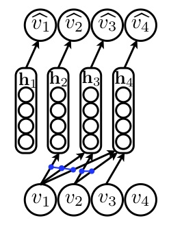

Ces résultats, publiés à la conférence AISTATS 2011, ont permis à ces travaux d'obtenir la distinction "Notable Paper Award".
L'objectif de ce projet est d'étendre l'application de ce modèle à de nouveaux problèmes, spécifiquement:
Advenant de bonnes performances, les résultats de ce projet feront l'objet d'une publication dans un journal scientifique.
Vidéo de la présentation de l'article: http://videolectures.net/aistats2011_larochelle_neural/
Projet: Réseaux de Neurones Autorégressifs
Responsable
Hugo LarochelleDescription
Le "Neural Autoregressive Distribution Estimator" (NADE), un réseau de neurones autorégressif développé par Hugo Larochelle et son collègue Iain Murray, est une approche puissante permettant de modéliser divers types de données de haute complexité. Par exemple, lorsqu'appliqué à la modélisation de caractères écrits, NADE est alors en mesure de reproduire de nouveaux caractères ressemblant fortement à ceux que produirait un humain:
Ces résultats, publiés à la conférence AISTATS 2011, ont permis à ces travaux d'obtenir la distinction "Notable Paper Award".
L'objectif de ce projet est d'étendre l'application de ce modèle à de nouveaux problèmes, spécifiquement:
- la modélisation d'images couleurs
- la modélisation sémantique de documents
- la classification automatique d'images et de documents
Advenant de bonnes performances, les résultats de ce projet feront l'objet d'une publication dans un journal scientifique.
Références sur internet
Article scientifique original: http://www.dmi.usherb.ca/~larocheh/publications/aistats2011_nade.pdfVidéo de la présentation de l'article: http://videolectures.net/aistats2011_larochelle_neural/